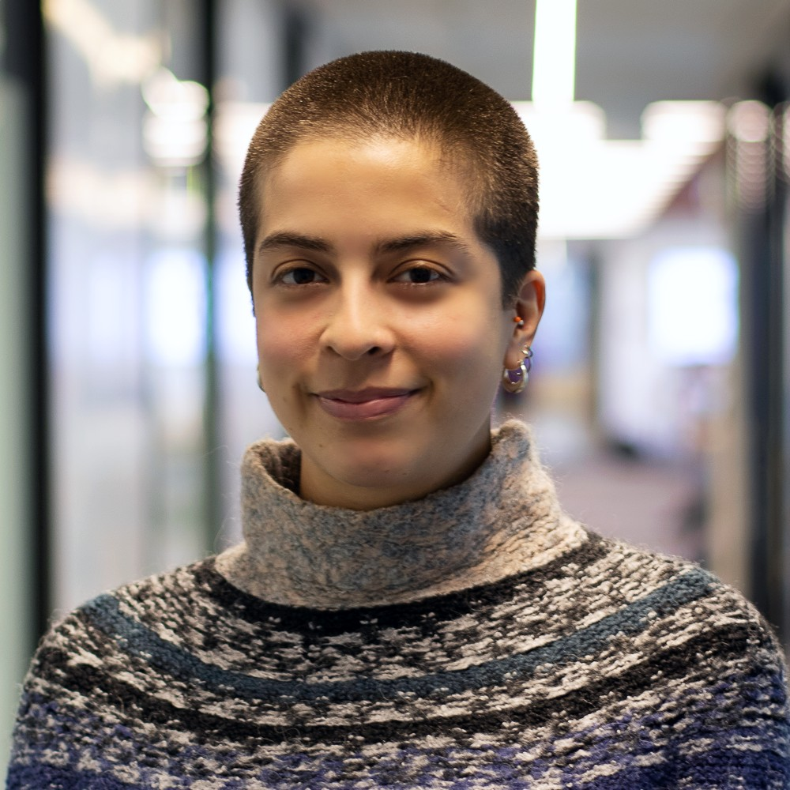

I'm a third-year PhD student in Computer Science at the University of Colorado at Boulder (CU Boulder), with a primary focus on Computational Social Science and Science of Science. I'm also pursuing a Graduate Certificate in Women and Gender Studies. My advisors are Aaron Clauset and Daniel Acuña.
Broadly, my research aims to understand how social and gender inequality influences the production, creation, and dissemination of knowledge, with an emphasis on the scientific ecosystem. Methodologically, I aim to leverage computational science for social science research.
Prior to starting my PhD, I completed a MSc in Applied Social Data Science at the London School of Economics (LSE) with Distinction and obtained a BA in Economics from the Mexico Autonomous Institute of Technology (ITAM). In my professional experience, I have contributed to multidimensional poverty measurements in Mexico during my time at its National Council for Evaluation of Social Policy; contributed to research on technology and gender at the Oxford Internet Institute; and engaged in social statistics work for the data-startup HACE.
Jul 2026 – Giving a talk about ongoing research at ICSSI
December 2025 – Attending the Complex Networks Winter Workshop (CNWW)
May 2025 – Giving a talk about ongoing research at the Atlanta Conference on Science and Innovation Policy
Jul 2024 – Presenting our poster "Socioeconomic status influences academic scholarship" at the International Conference on Computational Social Science (IC2S2)
Jul 2024 – Giving a talk about our work in progress "Socioeconomic status influences academic scholarship" at the International Conference on the Science of Science and Innovation (ICSSI)
Sep 1, 2023 – Starting the Computer Science PhD at CU Boulder!